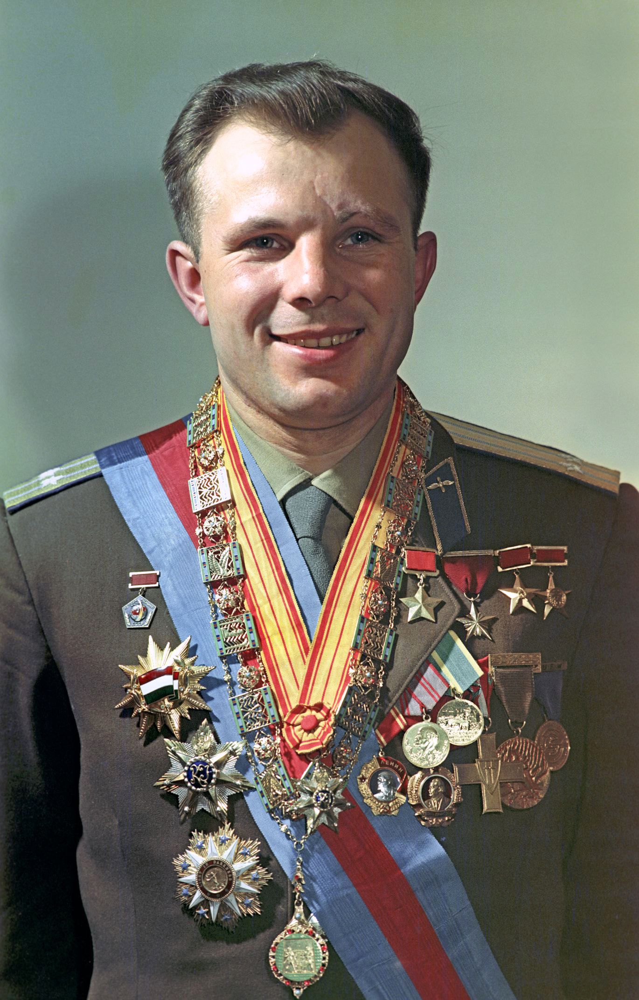

Pionierzy lotów załogowych
Od pierwszego lotu Jurija Gagarina po współczesne misje NASA, ESA i SpaceX — astronauci i kosmonauci przekraczają granice ludzkich możliwości, badając przestrzeń kosmiczną i torując drogę przyszłym pokoleniom odkrywców.
Najważniejsze postacie w historii lotów kosmicznych:
| Imię i nazwisko | Zdjęcie | Kraj | Pierwsza misja | Ciekawostka |
|---|---|---|---|---|
| Jurij Gagarin |  | ZSRR | Wostok 1 (1961) | Pierwszy człowiek w kosmosie |
| Neil Armstrong |  |
USA | Apollo 11 (1969) | Pierwszy człowiek na Księżycu |
| Valentina Tierieszkowa | ZSRR | Wostok 6 (1963) | Pierwsza kobieta w kosmosie | |
| Buzz Aldrin | USA | Apollo 11 (1969) | Drugi człowiek na Księżycu | |
| Chris Hadfield |  |
Kanada | STS-74 (1995) | Znany z popularyzacji nauki i muzyki w kosmosie |